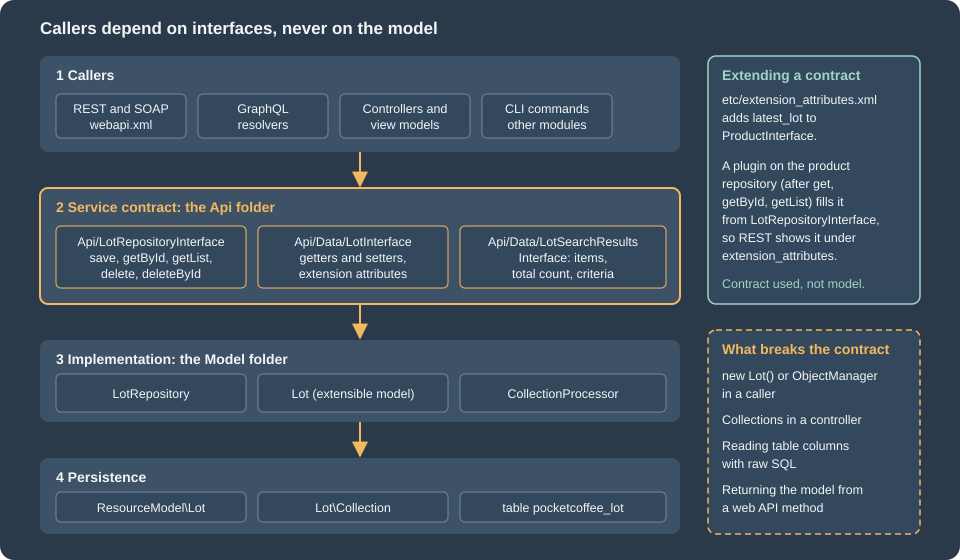

Service Contracts and Repositories
|
This content was generated with the assistance of AI and should be verified against the official documentation before being relied on in production. |
A Magento module that stores something and lets others read it does not hand out its models. It publishes a service
contract: a handful of PHP interfaces that say what can be asked and what comes back, and it keeps the classes behind them
private. Every core module works this way (the product, the customer, the order, the cart, the store), which is why the same
five repository methods appear everywhere, why REST and SOAP routes can be declared in one XML file, and why an extension can
add a field to a product without touching the product module. This page builds a complete contract for a Pocket Coffee
entity, the roast lot, shows how callers use it with SearchCriteria, exposes it on the web API and extends a core contract
with an extension attribute.
The page was written against Magento Open Source and Adobe Commerce 2.4.9 (generally available 2026-05-12) and Mage-OS 3.6.0 (2026-10-14, built on the 2.4.9 code base) and checked on 2026-10-27. Service contracts are PHP in the shop’s process, so they apply to Magento Open Source, Adobe Commerce on premises or on cloud infrastructure, and Mage-OS; Adobe Commerce as a Cloud Service (ACCS) accepts no PHP modules, although its REST API is the web API of the same core contracts (see the editions page). The web API side is continued on the REST and GraphQL APIs page; the table behind the entity is created on the declarative schema and patches page.
All code and outputs come from a Mage-OS 3.6.0 installation in developer mode (PHP 8.5.12, MariaDB 11.8.9, OpenSearch 3.9.0,
Valkey 9.1.3) with the module PocketCoffee_Lot. The module is the one used on the schema page: the table
pocketcoffee_lot and its roast lots for the product POCKET-001 (Ethiopia, Colombia and Brazil from a data patch, and a Kenya
lot added by hand) exist before this page starts.
What a service contract is
Adobe’s definition is short: a service contract is a set of PHP interfaces defined for a module, made of data interfaces, which preserve data integrity, and service interfaces, which hide business logic from the callers (controllers, web services and other modules). The two kinds live in two folders of the module, and the convention is strict:
| Kind | Folder | Examples in the core |
|---|---|---|
Data interface |
|
|
Repository interface |
|
|
Management interface |
|
|
Metadata interface |
|
|
The benefits are the reason the pattern is worth its boilerplate. Callers depend on interfaces with the @api marker, which
Adobe’s documentation uses to indicate backward compatibility, so a module upgrade that keeps the interface does not break them. The XML of
webapi.xml can expose any service method as REST and SOAP without code. And the model behind the interface is free to change
(the table layout, the EAV attributes, even the storage) without callers noticing. The figure shows who may talk to whom.

The class diagram of the contract built on this page:
The data interface
A data interface lists the getters and setters of an entity, and nothing else. LotInterface extends
Magento\Framework\Api\ExtensibleDataInterface, which adds the extension attribute accessors used further down. The constants
name the keys that become the JSON properties and the table columns; the status constants are part of the contract because callers
need them.
<?php
declare(strict_types=1);
namespace PocketCoffee\Lot\Api\Data;
use Magento\Framework\Api\ExtensibleDataInterface;
/**
* One roast lot of a product. Data interface of the Lot service contract.
*
* @api
*/
interface LotInterface extends ExtensibleDataInterface
{
public const LOT_ID = 'lot_id';
public const PRODUCT_ID = 'product_id';
public const SKU = 'sku';
public const ORIGIN = 'origin';
public const ROASTED_AT = 'roasted_at';
public const WEIGHT_KG = 'weight_kg';
public const STATUS = 'status';
public const CREATED_AT = 'created_at';
public const UPDATED_AT = 'updated_at';
public const STATUS_ROASTING = 0;
public const STATUS_READY = 1;
public const STATUS_SOLD_OUT = 2;
/**
* @return int|null
*/
public function getLotId();
/**
* @param int $lotId
* @return $this
*/
public function setLotId($lotId);
/**
* @return int
*/
public function getProductId();
/**
* @param int $productId
* @return $this
*/
public function setProductId($productId);
/**
* @return string
*/
public function getSku();
/**
* @param string $sku
* @return $this
*/
public function setSku($sku);The rest of the interface repeats the pattern for the other columns and ends with the extension attribute accessors:
/**
* @return string|null
*/
public function getCreatedAt();
/**
* @return string|null
*/
public function getUpdatedAt();
/**
* @return \PocketCoffee\Lot\Api\Data\LotExtensionInterface|null
*/
public function getExtensionAttributes();
/**
* @param \PocketCoffee\Lot\Api\Data\LotExtensionInterface $extensionAttributes
* @return $this
*/
public function setExtensionAttributes(\PocketCoffee\Lot\Api\Data\LotExtensionInterface $extensionAttributes);
}Four rules turn this plain interface into something the Framework can serialize.
-
Docblocks are executable. The web API reads the
@paramand@returntypes from the docblock, because older PHP versions could not declare them, and it requires fully qualified class names even when ausestatement exists. The failure is real: with the@returnofgetByIdshortened toLotInterface, a REST call answered{"message":"Class \"LotInterface\" does not exist","code":-1,...}; restoring the fully qualified name fixed it. Scalars areint,float,string,bool,mixed, and a list is the type followed by[], as in\...\LotInterface[]. -
Getters become keys. The conversion of an object to an array calls the getters and turns the method name into a snake case key (
getRoastedAt()becomesroasted_at), and the reverse conversion calls the setters. Adobe’s guidance warns against underscores between letters and digits in column names for the same reason:default_shipping_1would not survive the round trip because the methoddefaultShipping1converts todefault_shipping1. -
Setters return
$this. The design-pattern page states that service contract data interfaces are now mutable, which is why they have setters at all. -
No logic. A data interface describes data; validation rules, if any, belong in the service behind it.
The search results interface
getList() does not return a bare array. It returns an object that carries the items, the total count regardless of paging and
the criteria that produced them. The core provides one generic implementation, Magento\Framework\Api\SearchResults; a module
declares its own interface only so that getItems() has a precise type, and maps it to the generic class with a preference.
<?php
declare(strict_types=1);
namespace PocketCoffee\Lot\Api\Data;
use Magento\Framework\Api\SearchResultsInterface;
/**
* Result of LotRepositoryInterface::getList().
*
* @api
*/
interface LotSearchResultsInterface extends SearchResultsInterface
{
/**
* @return \PocketCoffee\Lot\Api\Data\LotInterface[]
*/
public function getItems();
/**
* @param \PocketCoffee\Lot\Api\Data\LotInterface[] $items
* @return $this
*/
public function setItems(array $items);
}The repository interface
The repository is the service interface of a persistent entity. The design patterns require five methods, and the Pocket Coffee repository has exactly those:
| Method | Contract |
|---|---|
|
Creates the record when the entity has no id and updates it when it has one. Returns the saved entity, reloaded. |
|
Loads one entity, or throws |
|
Returns the search result object for the criteria. |
|
Deletes the entity and returns true, or throws |
|
Deletes by key and returns true. |
<?php
declare(strict_types=1);
namespace PocketCoffee\Lot\Api;
/**
* Repository of roast lots. Service interface of the Lot service contract.
*
* @api
*/
interface LotRepositoryInterface
{
/**
* Create a lot (no lot_id) or update one (lot_id set).
*
* @param \PocketCoffee\Lot\Api\Data\LotInterface $lot
* @return \PocketCoffee\Lot\Api\Data\LotInterface
* @throws \Magento\Framework\Exception\CouldNotSaveException
*/
public function save(\PocketCoffee\Lot\Api\Data\LotInterface $lot);
/**
* @param int $lotId
* @return \PocketCoffee\Lot\Api\Data\LotInterface
* @throws \Magento\Framework\Exception\NoSuchEntityException
*/
public function getById($lotId);
/**
* @param \Magento\Framework\Api\SearchCriteriaInterface $searchCriteria
* @return \PocketCoffee\Lot\Api\Data\LotSearchResultsInterface
*/
public function getList(\Magento\Framework\Api\SearchCriteriaInterface $searchCriteria);
/**
* @param \PocketCoffee\Lot\Api\Data\LotInterface $lot
* @return bool true on success
* @throws \Magento\Framework\Exception\CouldNotDeleteException
*/
public function delete(\PocketCoffee\Lot\Api\Data\LotInterface $lot);
/**
* @param int $lotId
* @return bool true on success
* @throws \Magento\Framework\Exception\NoSuchEntityException
* @throws \Magento\Framework\Exception\CouldNotDeleteException
*/
public function deleteById($lotId);
}The @throws tags are part of the contract. The web API turns NoSuchEntityException into HTTP 404 and the save and delete
exceptions into 400, as shown below. A repository should also be stateless after construction: every call must be independent of
the previous ones, and a cache, if the entity needs one, uses the registry pattern like the customer repository does.
The implementation
Behind the interfaces sit four small classes. None of them is part of the contract; callers never import them.
-
The model extends
Magento\Framework\Model\AbstractExtensibleModeland implementsLotInterface._construct()binds it to its resource model. The accessors read and write the model’s data array and cast to the types of the interface; the id getter returnsnullfor a new entity, so thatsave()can tell a creation from an update. The class also delegates the extension attribute accessors to the abstract class. -
The resource model extends
AbstractDband names the table and the primary key. -
The collection extends
AbstractCollectionand ties the model and the resource model together. -
The repository implements
LotRepositoryInterfacewith the three objects above and the collection processor.
<?php
declare(strict_types=1);
namespace PocketCoffee\Lot\Model;
use Magento\Framework\Model\AbstractExtensibleModel;
use PocketCoffee\Lot\Api\Data\LotExtensionInterface;
use PocketCoffee\Lot\Api\Data\LotInterface;
class Lot extends AbstractExtensibleModel implements LotInterface
{
/**
* @inheritDoc
*/
protected function _construct()
{
$this->_init(ResourceModel\Lot::class);
}
/**
* @inheritDoc
*/
public function getLotId()
{
return $this->getData(self::LOT_ID) === null ? null : (int) $this->getData(self::LOT_ID);
}
/**
* @inheritDoc
*/
public function setLotId($lotId)
{
return $this->setData(self::LOT_ID, $lotId);
}
/**
* @inheritDoc
*/
public function getProductId()
{
return (int) $this->getData(self::PRODUCT_ID);
}
/**
* @inheritDoc
*/
public function setProductId($productId)
{
return $this->setData(self::PRODUCT_ID, $productId);
} /**
* @inheritDoc
*/
public function getExtensionAttributes()
{
return $this->_getExtensionAttributes();
}
/**
* @inheritDoc
*/
public function setExtensionAttributes(LotExtensionInterface $extensionAttributes)
{
return $this->_setExtensionAttributes($extensionAttributes);
}
}<?php
declare(strict_types=1);
namespace PocketCoffee\Lot\Model\ResourceModel;
use Magento\Framework\Model\ResourceModel\Db\AbstractDb;
class Lot extends AbstractDb
{
/**
* @inheritDoc
*/
protected function _construct()
{
$this->_init('pocketcoffee_lot', 'lot_id');
}
}<?php
declare(strict_types=1);
namespace PocketCoffee\Lot\Model\ResourceModel\Lot;
use Magento\Framework\Model\ResourceModel\Db\Collection\AbstractCollection;
use PocketCoffee\Lot\Model\Lot;
use PocketCoffee\Lot\Model\ResourceModel\Lot as LotResource;
class Collection extends AbstractCollection
{
/**
* @inheritDoc
*/
protected function _construct()
{
$this->_init(Lot::class, LotResource::class);
}
}The repository itself is where the contract meets the persistence layer. The collection processor (an interface that the core
maps to Magento\Framework\Api\SearchCriteria\CollectionProcessor, which dev:di:info confirms) applies the filters, the sort
orders and the paging of a SearchCriteria to a collection, so the repository needs no query code. The factories
(LotFactory, CollectionFactory, LotSearchResultsInterfaceFactory) are generated classes created on first use; the page on
dependency injection explains them.
<?php
declare(strict_types=1);
namespace PocketCoffee\Lot\Model;
use Magento\Framework\Api\SearchCriteria\CollectionProcessorInterface;
use Magento\Framework\Api\SearchCriteriaInterface;
use Magento\Framework\Exception\CouldNotDeleteException;
use Magento\Framework\Exception\CouldNotSaveException;
use Magento\Framework\Exception\NoSuchEntityException;
use PocketCoffee\Lot\Api\Data\LotInterface;
use PocketCoffee\Lot\Api\Data\LotSearchResultsInterface;
use PocketCoffee\Lot\Api\Data\LotSearchResultsInterfaceFactory;
use PocketCoffee\Lot\Api\LotRepositoryInterface;
use PocketCoffee\Lot\Model\ResourceModel\Lot as LotResource;
use PocketCoffee\Lot\Model\ResourceModel\Lot\CollectionFactory;
class LotRepository implements LotRepositoryInterface
{
public function __construct(
private readonly LotResource $resource,
private readonly LotFactory $lotFactory,
private readonly CollectionFactory $collectionFactory,
private readonly LotSearchResultsInterfaceFactory $searchResultsFactory,
private readonly CollectionProcessorInterface $collectionProcessor
) {
}
/**
* @inheritDoc
*/
public function save(LotInterface $lot)
{
try {
$this->resource->save($lot);
} catch (\Exception $e) {
throw new CouldNotSaveException(__('Could not save the lot: %1', $e->getMessage()), $e);
}
return $this->getById($lot->getLotId());
}
/**
* @inheritDoc
*/
public function getById($lotId)
{
$lot = $this->lotFactory->create();
$this->resource->load($lot, $lotId);
if (!$lot->getLotId()) {
throw new NoSuchEntityException(__('The lot with ID "%1" does not exist.', $lotId));
}
return $lot;
}
/**
* @inheritDoc
*/
public function getList(SearchCriteriaInterface $searchCriteria)
{
$collection = $this->collectionFactory->create();
$this->collectionProcessor->process($searchCriteria, $collection);
/** @var LotSearchResultsInterface $searchResults */
$searchResults = $this->searchResultsFactory->create();
$searchResults->setSearchCriteria($searchCriteria);
$searchResults->setItems($collection->getItems());
$searchResults->setTotalCount($collection->getSize());
return $searchResults;
}
/**
* @inheritDoc
*/
public function delete(LotInterface $lot)
{
try {
$this->resource->delete($lot);
} catch (\Exception $e) {
throw new CouldNotDeleteException(__('Could not delete the lot: %1', $e->getMessage()), $e);
}
return true;
}
/**
* @inheritDoc
*/
public function deleteById($lotId)
{
return $this->delete($this->getById($lotId));
}
}The module then maps every interface to its class in etc/di.xml, the only place where the interfaces and the model meet. The
preference for LotSearchResultsInterface points to the core class, and the product plugin and the console commands (see below) are
registered in the same file.
<?xml version="1.0"?>
<config xmlns:xsi="http://www.w3.org/2001/XMLSchema-instance" xsi:noNamespaceSchemaLocation="urn:magento:framework:ObjectManager/etc/config.xsd">
<preference for="PocketCoffee\Lot\Api\Data\LotInterface" type="PocketCoffee\Lot\Model\Lot"/>
<preference for="PocketCoffee\Lot\Api\Data\LotSearchResultsInterface" type="Magento\Framework\Api\SearchResults"/>
<preference for="PocketCoffee\Lot\Api\LotRepositoryInterface" type="PocketCoffee\Lot\Model\LotRepository"/>
<type name="Magento\Catalog\Api\ProductRepositoryInterface">
<plugin name="pocketcoffee_lot_latest_lot" type="PocketCoffee\Lot\Plugin\ProductLatestLotPlugin"/>
</type>
<type name="Magento\Framework\Console\CommandListInterface">
<arguments>
<argument name="commands" xsi:type="array">
<item name="pocketcoffee_lot_list" xsi:type="object">PocketCoffee\Lot\Console\Command\ListCommand</item>
<item name="pocketcoffee_lot_add" xsi:type="object">PocketCoffee\Lot\Console\Command\AddCommand</item>
</argument>
</arguments>
</type>
</config>Two details of the repository are worth copying into every module. The exceptions are the Framework’s own
(CouldNotSaveException, NoSuchEntityException, CouldNotDeleteException) with the original exception as the previous one,
because the web API and the admin map those to HTTP codes and messages. And save() returns getById(), so the caller gets the
database defaults (created_at, updated_at) and the id.
Using a repository
A class that needs lots asks for LotRepositoryInterface in its constructor and nothing else. It never creates a model, a
collection or a resource model, and it never calls the ObjectManager. Reading uses a SearchCriteria, built with the builders
that the Framework provides.
SearchCriteria: filters, groups, sorting and paging
A SearchCriteria is made of filter groups, sort orders, a page size and a current page. A Filter is a field, a value and a
condition type. The rule that decides everything: filters inside one group are joined with OR, and groups are joined with AND.
The core says it as (A OR B) AND ©. It is therefore impossible to write (A AND B) OR (C AND D) in one criteria. The
command below applies the rule to Pocket Coffee: the user passes any number of --origin options (one group, joined by OR) and
an optional --since date (a second group, joined by AND), plus a sort order and the paging.
protected function execute(InputInterface $input, OutputInterface $output): int
{
// filters inside one group are joined with OR, groups are joined with AND
$groups = [];
$origins = (array) $input->getOption('origin');
if ($origins) {
$filters = [];
foreach ($origins as $origin) {
$filters[] = $this->filterBuilder->setField(LotInterface::ORIGIN)
->setConditionType('eq')->setValue($origin)->create();
}
$groups[] = $this->filterGroupBuilder->setFilters($filters)->create();
}
if ($input->getOption('since')) {
$groups[] = $this->filterGroupBuilder->setFilters([
$this->filterBuilder->setField(LotInterface::ROASTED_AT)
->setConditionType('gteq')->setValue($input->getOption('since'))->create(),
])->create();
}
$criteria = $this->searchCriteriaBuilder
->setFilterGroups($groups)
->addSortOrder($this->sortOrderBuilder->setField(LotInterface::ROASTED_AT)
->setDirection(SortOrder::SORT_DESC)->create())
->setPageSize((int) $input->getOption('page-size'))
->setCurrentPage((int) $input->getOption('page'))
->create();
$result = $this->lotRepository->getList($criteria);
$output->writeln(sprintf('total_count: %d, returned: %d', $result->getTotalCount(), count($result->getItems())));
foreach ($result->getItems() as $lot) {
$output->writeln(sprintf(
'#%d %s %s roasted %s %.3f kg status %d',
$lot->getLotId(),
$lot->getSku(),
$lot->getOrigin(),
$lot->getRoastedAt(),
$lot->getWeightKg(),
$lot->getStatus()
));
}
return Command::SUCCESS;
}
}The builders are injected objects (SearchCriteriaBuilder, FilterBuilder, FilterGroupBuilder, SortOrderBuilder) that collect
state; create() returns the immutable object and resets the builder. Forgetting create(), or sharing a builder between two
criteria, leaks filters from one query into the next, which is why the documentation’s example uses the builders and not
new. These are the results:
$ bin/magento pocketcoffee:lot:list
total_count: 4, returned: 4
#7 POCKET-001 Kenya roasted 2026-10-27 8.500 kg status 0
#3 POCKET-001 Brazil roasted 2026-10-26 15.250 kg status 0
#2 POCKET-001 Colombia roasted 2026-10-05 20.000 kg status 1
#1 POCKET-001 Ethiopia roasted 2026-09-14 12.500 kg status 2$ bin/magento pocketcoffee:lot:list --origin=Ethiopia --origin=Brazil
total_count: 2, returned: 2
#3 POCKET-001 Brazil roasted 2026-10-26 15.250 kg status 0
#1 POCKET-001 Ethiopia roasted 2026-09-14 12.500 kg status 2$ bin/magento pocketcoffee:lot:list --origin=Ethiopia --origin=Brazil --since=2026-10-01
total_count: 1, returned: 1
#3 POCKET-001 Brazil roasted 2026-10-26 15.250 kg status 0$ bin/magento pocketcoffee:lot:list --page-size=2 --page=2
total_count: 4, returned: 2
#2 POCKET-001 Colombia roasted 2026-10-05 20.000 kg status 1
#1 POCKET-001 Ethiopia roasted 2026-09-14 12.500 kg status 2The first run has no filter and returns every lot, newest first. The second ORs two origins. The third adds the date group, an AND,
and only the Brazil lot remains. The fourth asks for the second page of two: total_count still says 4, because it counts the
rows that match regardless of the page.
The condition types are the same in PHP (setConditionType()) and on the web API. They are the keys the SQL layer
understands:
| Condition | Meaning |
|---|---|
|
Equals, not equals. |
|
SQL LIKE and NOT LIKE; the value carries the wildcards ( |
|
In or not in a list; the value is a comma-separated string. |
|
Greater than, greater than or equal, less than, less than or equal. The documentation also lists |
|
The two ends of a range, used as a pair. |
|
Column is NULL or is not NULL. |
|
The value is, or is not, within a comma-separated set stored in the column. |
Most of them were run against the lots over REST (like with Eth%25, in, neq, gteq, gt, nin, lteq, null,
notnull and from); moreq, to, finset, nlike and nfinset come from the documentation and were not run. The behaviour at the edges, also
observed:
-
A page beyond the last returns an empty
itemsarray and the truetotal_count(page 9 of size 2 over 4 lots). -
No
pageSizereturns every match. A repository that backs a public endpoint should cap the page size itself; the search engine side has a result window of 10000 by default, as the documentation states for OpenSearch based repositories. -
A filter or a sort on a column that does not exist is not validated by the processor. The query fails with a database error and the REST call answers 400 with the SQL message (
Unknown column 'nope' in 'WHERE'). The message is shown because the shop is in developer mode; in production mode the web API masks the details of unexpected exceptions behind a report id. -
Only top-level fields can be filtered. A field that lives in another table needs a custom filter or a join, described next.
Collection processors, custom filters and joins
CollectionProcessor is a composite of three processors, FilterProcessor, SortingProcessor and PaginationProcessor,
configured in di.xml. A module with special needs declares its own virtual types: a field mapping when the criteria field
differs from the column (code to customer_group_code), a custom filter class implementing CustomFilterInterface for a
condition that is not a plain column comparison (the core uses one for category_id on products), default sort orders, and a
JoinProcessor with CustomJoinInterface classes for joined tables. Collections of EAV entities have to use the EAV variant of the
filter processor, or the custom filters are not applied. The Pocket Coffee repository needs none of this because its filters are
columns of its own table.
Creating and updating
Creation goes through the generated factory of the interface (LotInterfaceFactory, resolved by the preference to the model) and
DataObjectHelper::populateWithArray(), which fills the object through the setters of the interface rather than the model’s
data array. The command below creates a lot for POCKET-001 and shows what happens when a unique key is violated:
protected function execute(InputInterface $input, OutputInterface $output): int
{
/** @var LotInterface $lot */
$lot = $this->lotFactory->create();
// fills the object through the setters of the interface
$this->dataObjectHelper->populateWithArray($lot, [
LotInterface::PRODUCT_ID => (int) $input->getArgument('product-id'),
LotInterface::SKU => $input->getArgument('sku'),
LotInterface::ORIGIN => $input->getArgument('origin'),
LotInterface::ROASTED_AT => $input->getArgument('roasted-at'),
LotInterface::WEIGHT_KG => (float) $input->getArgument('weight-kg'),
LotInterface::STATUS => LotInterface::STATUS_ROASTING,
], LotInterface::class);
try {
$saved = $this->lotRepository->save($lot);
$output->writeln(sprintf('saved lot #%d (%s)', $saved->getLotId(), get_class($saved)));
return Command::SUCCESS;
} catch (CouldNotSaveException $e) {
$output->writeln('error: ' . $e->getMessage());
return Command::FAILURE;
}
}
}$ bin/magento pocketcoffee:lot:add 1 POCKET-001 Peru 2026-10-28 5.5
saved lot #12 (PocketCoffee\Lot\Model\Lot)
$ bin/magento pocketcoffee:lot:add 1 POCKET-001 Kenya 2026-10-27 3
error: Could not save the lot: Unique constraint violation foundThe second run broke the unique constraint (sku and roasted_at) of the table, and the caller received a
CouldNotSaveException with a readable message instead of a database error. An update is the same call with the id set:
load the entity with getById(), change it through the setters and pass it to save().
Calling a core repository
The same builders work on every repository. A search of the product repository for the Pocket Coffee beans, from PHP, is:
$criteria = $this->searchCriteriaBuilder
->addFilter('sku', 'POCKET%', 'like')
->setPageSize(20)
->create();
$products = $this->productRepository->getList($criteria)->getItems();addFilter() of the builder puts each call into a group of its own, so several calls are ANDed; addFilters([...]) puts an
array of filters into one group, which makes them ORed. The product repository returns products with their extension
attributes, which is the next topic.
Exposing the contract on the web API
A service method becomes a REST and SOAP endpoint with one XML element. The module’s etc/webapi.xml maps four routes to the
repository, protected by an ACL resource declared in etc/acl.xml:
<?xml version="1.0"?>
<routes xmlns:xsi="http://www.w3.org/2001/XMLSchema-instance" xsi:noNamespaceSchemaLocation="urn:magento:module:Magento_Webapi:etc/webapi.xsd">
<route url="/V1/pocketcoffee/lots/:lotId" method="GET">
<service class="PocketCoffee\Lot\Api\LotRepositoryInterface" method="getById"/>
<resources>
<resource ref="PocketCoffee_Lot::lots"/>
</resources>
</route>
<route url="/V1/pocketcoffee/lots" method="GET">
<service class="PocketCoffee\Lot\Api\LotRepositoryInterface" method="getList"/>
<resources>
<resource ref="PocketCoffee_Lot::lots"/>
</resources>
</route>
<route url="/V1/pocketcoffee/lots" method="POST">
<service class="PocketCoffee\Lot\Api\LotRepositoryInterface" method="save"/>
<resources>
<resource ref="PocketCoffee_Lot::lots"/>
</resources>
</route>
<route url="/V1/pocketcoffee/lots/:lotId" method="DELETE">
<service class="PocketCoffee\Lot\Api\LotRepositoryInterface" method="deleteById"/>
<resources>
<resource ref="PocketCoffee_Lot::lots"/>
</resources>
</route>
</routes><?xml version="1.0"?>
<config xmlns:xsi="http://www.w3.org/2001/XMLSchema-instance" xsi:noNamespaceSchemaLocation="urn:magento:framework:Acl/etc/acl.xsd">
<acl>
<resources>
<resource id="Magento_Backend::admin">
<resource id="PocketCoffee_Lot::lots" title="Pocket Coffee roast lots" sortOrder="200"/>
</resource>
</resources>
</acl>
</config>The route attributes are url, which must start with /V1 and marks path parameters with a colon (:lotId, matched to the
method parameter of the same name), and method, one of GET, POST, PUT and DELETE. The service element names the
interface and the method, never the implementation, so the preference decides which class answers. The resources element
lists who may call: a resource of etc/acl.xml (admin roles and integrations are granted it), self (the customer reads their own
data) or anonymous. A data element with parameter children forces request parameters, for example to take the customer id
from the token.
The mapping rules for the HTTP side:
-
A
GETroute that ends ingetListtakes the criteria from the query string, in the formsearchCriteria[filterGroups][0][filters][0][field]=originwithvalueandconditionType(also writtencondition_type) next to it. The parameter is required: a request without anysearchCriteriaanswered 400 with"searchCriteria" is required. Enter and try again. -
POST,PUTandDELETEtake their parameters from the JSON body, keyed by the parameter name of the method, so saving a lot is{"lot": {...}}. -
The response is the serialized data interface. The extension attributes appear under
extension_attributeswhen they are set. -
All of the routes above were granted to an admin token with every resource; an anonymous call to
GET /V1/pocketcoffee/lots/1answered 401 withThe consumer isn't authorized to access %resources.
Examples against the local shop (the token comes from the admin token endpoint, with the local test user; the value is never printed):
curl -s -H "Authorization: Bearer ${ADMIN_TOKEN}" \
"http://localhost:8082/rest/V1/pocketcoffee/lots/2"{"lot_id":2,"product_id":1,"sku":"POCKET-001","origin":"Colombia","roasted_at":"2026-10-05","weight_kg":20,"status":1,"created_at":"2026-10-27 17:11:04","updated_at":"2026-10-27 17:11:04"}A search with an OR group, a sort order and a page size, written without the URL escaping that curl needs for the brackets (-g
turns the globbing off):
curl -s -g -H "Authorization: Bearer ${ADMIN_TOKEN}" \
"http://localhost:8082/rest/V1/pocketcoffee/lots?\
searchCriteria[filterGroups][0][filters][0][field]=origin&\
searchCriteria[filterGroups][0][filters][0][value]=Ethiopia&\
searchCriteria[filterGroups][0][filters][1][field]=origin&\
searchCriteria[filterGroups][0][filters][1][value]=Brazil&\
searchCriteria[sortOrders][0][field]=roasted_at&\
searchCriteria[sortOrders][0][direction]=DESC&\
searchCriteria[pageSize]=10"{"items":[{"lot_id":3,"product_id":1,"sku":"POCKET-001","origin":"Brazil","roasted_at":"2026-10-26","weight_kg":15.25,"status":0,"created_at":"2026-10-27 17:11:04","updated_at":"2026-10-27 17:11:04"},{"lot_id":1,"product_id":1,"sku":"POCKET-001","origin":"Ethiopia","roasted_at":"2026-09-14","weight_kg":12.5,"status":2,"created_at":"2026-10-27 17:11:04","updated_at":"2026-10-27 17:11:04"}],"search_criteria":{"filter_groups":[{"filters":[{"field":"origin","value":"Ethiopia","condition_type":"eq"},{"field":"origin","value":"Brazil","condition_type":"eq"}]}],"sort_orders":[{"field":"roasted_at","direction":"DESC"}],"page_size":10},"total_count":2}Creating and updating use the same POST (the id in the body selects the update); the failures of the repository map to HTTP
codes as follows:
| Call | HTTP | Answer (developer mode) |
|---|---|---|
|
404 |
|
|
400 |
|
|
400 |
|
|
200, then 404 |
|
Any call without a token |
401 |
|
The message templates keep their %1 placeholders with the values in parameters, which is how the web API localizes errors on
the client side.
SOAP comes with the route. The service name is the module and the interface in camel case with a version suffix, and the WSDL lists one operation per route:
$ curl -s "http://localhost:8082/soap?wsdl_list=1" | grep -o pocketCoffeeLotLotRepositoryV1 | sort -u
pocketCoffeeLotLotRepositoryV1
$ curl -s -H "Authorization: Bearer ${ADMIN_TOKEN}" \
"http://localhost:8082/soap/default?wsdl&services=pocketCoffeeLotLotRepositoryV1" \
| grep -oE 'name="pocketCoffeeLotLotRepositoryV1(DeleteById|GetById|GetList|Save)"' | sort -u
name="pocketCoffeeLotLotRepositoryV1DeleteById"
name="pocketCoffeeLotLotRepositoryV1GetById"
name="pocketCoffeeLotLotRepositoryV1GetList"
name="pocketCoffeeLotLotRepositoryV1Save"The generated types are PocketCoffeeLotDataLotInterface, PocketCoffeeLotDataLotExtensionInterface and
PocketCoffeeLotDataLotSearchResultsInterface. The WSDL needs a token that holds the resource, like the REST routes.
GraphQL is not generated from contracts: a GraphQL field needs a schema.graphqls entry and a resolver that calls the
repository. That is the subject of the REST and GraphQL page.
Constructors of web API classes
Since the fix for the SessionReaper bulletin APSB25-88, the REST layer validates the constructor parameters of the class that
implements a service interface. Adobe’s documentation lists the supported parameter types as simple types and *\Api\Data\*Interface
classes, and the unsupported ones as models, service classes and other complex types, which "will not be instantiated from REST
payloads"; developers of earlier REST APIs are asked to review service implementations for unsupported constructor parameters.
Adobe states that 2.4.9 and all prior supported versions were patched. LotRepository takes a resource model, factories and a
collection processor in its constructor, and every REST call above worked: those arguments come from the dependency injection
configuration and not from request data, so the validation concerns what a payload may fill in, not what the container injects.
Keep payload-facing classes to data interfaces, and keep services free of constructor parameters that a request could
influence. The security consequences are on the security page.
Extension attributes
Several modules cannot all add columns to the product, and they must not edit ProductInterface. The extension attribute is the
mechanism that lets any module add a field to a data interface that implements ExtensibleDataInterface. It is declared in
etc/extension_attributes.xml:
<?xml version="1.0"?>
<config xmlns:xsi="http://www.w3.org/2001/XMLSchema-instance" xsi:noNamespaceSchemaLocation="urn:magento:framework:Api/etc/extension_attributes.xsd">
<extension_attributes for="Magento\Catalog\Api\Data\ProductInterface">
<attribute code="latest_lot" type="PocketCoffee\Lot\Api\Data\LotInterface">
<resources>
<resource ref="PocketCoffee_Lot::lots"/>
</resources>
</attribute>
</extension_attributes>
</config>The element names the interface to extend (for), the attribute code in snake case (code) and its type, a scalar or a data
interface (type); a resources child restricts the attribute to roles with one of the listed ACL resources, which is the one
place where the web API can hide a field from some callers. A join child, with reference_table, reference_field,
join_on_field and field elements, tells the Framework to fill the attribute from a joined table when a collection runs through
the extension attribute join processor, and makes the attribute searchable (the documentation shows stock_item of the product
with its qty). The page did not run a join attribute; the Pocket Coffee attribute is filled by code.
What Magento generates
The Framework reads all the extension_attributes.xml files at generation time and writes an interface and a class for every
extensible interface, even those without any attribute. After the first REST call that read a product, the product extension
interface had the new accessors:
// generated/code/Magento/Catalog/Api/Data/ProductExtensionInterface.php (excerpt)
/**
* @return \PocketCoffee\Lot\Api\Data\LotInterface|null
*/
public function getLatestLot();
/**
* @param \PocketCoffee\Lot\Api\Data\LotInterface $latestLot
* @return $this
*/
public function setLatestLot(\PocketCoffee\Lot\Api\Data\LotInterface $latestLot);The module’s own entity has an empty LotExtensionInterface (generated because LotInterface is extensible), ready for the next
module that wants to add something to a lot. Because the code is generated, nothing outside generated/ has to be written.
Filling the attribute
Declaring the attribute does not populate it. For a core interface the usual route is a plugin on the repository that loads the data: the page on plugins explains the mechanism and its limits. This one adds the newest lot to every product read through the product repository:
<?php
declare(strict_types=1);
namespace PocketCoffee\Lot\Plugin;
use Magento\Catalog\Api\Data\ProductInterface;
use Magento\Catalog\Api\Data\ProductSearchResultsInterface;
use Magento\Catalog\Api\ProductRepositoryInterface;
use Magento\Framework\Api\FilterBuilder;
use Magento\Framework\Api\SearchCriteriaBuilder;
use Magento\Framework\Api\SortOrder;
use Magento\Framework\Api\SortOrderBuilder;
use PocketCoffee\Lot\Api\Data\LotInterface;
use PocketCoffee\Lot\Api\LotRepositoryInterface;
/**
* Fills the latest_lot extension attribute of products read through the product repository.
*/
class ProductLatestLotPlugin
{
public function __construct(
private readonly LotRepositoryInterface $lotRepository,
private readonly SearchCriteriaBuilder $searchCriteriaBuilder,
private readonly FilterBuilder $filterBuilder,
private readonly SortOrderBuilder $sortOrderBuilder
) {
}
public function afterGet(ProductRepositoryInterface $subject, ProductInterface $product): ProductInterface
{
return $this->addLatestLot($product);
}
public function afterGetById(ProductRepositoryInterface $subject, ProductInterface $product): ProductInterface
{
return $this->addLatestLot($product);
}
public function afterGetList(
ProductRepositoryInterface $subject,
ProductSearchResultsInterface $searchResults
): ProductSearchResultsInterface {
foreach ($searchResults->getItems() as $product) {
$this->addLatestLot($product);
}
return $searchResults;
}
private function addLatestLot(ProductInterface $product): ProductInterface
{
$extension = $product->getExtensionAttributes();
if ($extension === null || $extension->getLatestLot() !== null) {
return $product;
}
$filter = $this->filterBuilder->setField(LotInterface::SKU)
->setConditionType('eq')
->setValue($product->getSku())
->create();
$sort = $this->sortOrderBuilder->setField(LotInterface::ROASTED_AT)
->setDirection(SortOrder::SORT_DESC)
->create();
$criteria = $this->searchCriteriaBuilder->addFilters([$filter])
->addSortOrder($sort)
->setPageSize(1)
->create();
$items = $this->lotRepository->getList($criteria)->getItems();
if ($items) {
$extension->setLatestLot(reset($items));
}
return $product;
}
}The plugin is declared in etc/di.xml on the interface, Magento\Catalog\Api\ProductRepositoryInterface, with after methods for
get, getById and getList. It reuses the module’s own repository and builders instead of querying the table, so it stays inside
the contract. The effect is visible on the web API, for an admin token, as the latest_lot entry among the extension attributes
of the product POCKET-001:
{
"sku": "POCKET-001",
"extension_attributes": {
"website_ids": [1],
"stock_item": { "item_id": 1, "qty": 96, "is_in_stock": true, "...": "..." },
"latest_lot": {
"lot_id": 3, "product_id": 1, "sku": "POCKET-001", "origin": "Brazil",
"roasted_at": "2026-10-26", "weight_kg": 15.25, "status": 0
}
}
}A search of the product list by sku like POCKET% returned one product with the same latest_lot (the Brazil lot), because the
plugin also covers getList.
Things to know before relying on an extension attribute:
-
It is read-only here. Saving a product with a
latest_lotin the body does nothing, because no code persists it. An attribute that can be written needs a plugin onsave(or an observer) that stores it, and a decision about what a partial update means. -
It costs a query per product in
getList. The plugin runs once per item, an N+1 pattern that is acceptable for a page of 20 products and not for an export of 20,000. The join form of the attribute exists to avoid that. -
The ACL resource decides who sees it. The attribute is bound to the resource
PocketCoffee_Lot::lots, so a role that can read products but has no right to the lots would not receive it. This was checked with the all-resources admin only; a restricted role was not created. -
It is not a custom attribute. Custom attributes (
custom_attributes) are EAV attributes that a merchant creates in the admin, stored in the entity’s value tables; extension attributes are defined in code, may be complex types, and do not appear in the admin.
Management and metadata interfaces
Not everything is CRUD. The core publishes operations as management interfaces (CartManagementInterface::placeOrder,
AccountManagementInterface::createAccount), with the same rules: data interfaces for parameters and results, the docblock rules,
webapi.xml for exposure. The shipping quote of the plugins page is a small management interface, exposed on the web API with the
same XML. A metadata interface answers questions about the platform or about attributes (ProductMetadataInterface returns the version,
the edition and the name). When a class does more than one of these jobs, split it: a repository
that also computes prices is no longer a repository.
The code a contract replaces
Three of the 2016 books cover the layers below a contract: the Magento 2 Cookbook has a recipe called "Working with
database models", the Development Essentials a chapter on Entity-Attribute-Value, and the DIY title a chapter on the REST and
SOAP APIs. The model, the resource model and the collection of this page are those layers, and they are still
there, behind the contract. What a current project adds is the discipline: callers use
the repository and the data interface, and the model is an implementation detail. Code that loads \Magento\Catalog\Model\Product
with a collection works, but it is the pattern that breaks first when the platform changes a model, whereas the contract is
what Adobe commits to keep.
Pocket Coffee thread
The roast lot is the shop’s record of what was roasted and when: the origin, the roast date, the weight and a status. The
roast date badge of the product page can read the newest ready lot through this contract (the latest_lot extension attribute
is already on the product), the order-placed observer of the plugins page could attach the lot to an order line, and a
warehouse integration can read and write lots over REST with an integration token that holds only PocketCoffee_Lot::lots.
None of them has to know the table.
Pitfalls
| Symptom | Cause and remedy |
|---|---|
|
A docblock of the service interface uses a short class name. Use the fully qualified name in every |
Properties missing in the JSON |
The interface has no getter for the property, or the name does not survive the camel case to snake case round trip. |
|
The query string has no |
A search returns everything |
An empty filter list means no filter, and a missing |
An unknown field answers with an SQL error |
The collection processor does not validate fields. Whitelist the searchable fields in the repository or in a field mapping. |
(A AND B) OR (C AND D) is impossible |
Groups are ANDed, filters in a group are ORed. Run two searches and merge, or build a custom filter. |
|
The plugin or the join runs per item. Batch the lookups for the page. |
A new extension attribute never appears |
The attribute needs generated classes and a regenerated interceptor for the plugin: clear |
Callers import |
The contract leaks. Type to |
What was and was not run
Run on the local Mage-OS 3.6.0 Docker shop: php -l and the Magento2 PHP_CodeSniffer standard on the module (no errors; line
length warnings in the XML headers, and one warning about the raw SQL of the schema patch described on the next page), xmllint
against the XSDs for db_schema.xml, di.xml, webapi.xml, acl.xml, extension_attributes.xml and module.xml; the
console commands for listing and creating lots; REST GET by id, search with filter groups, sort order and page size,
POST for create and update, DELETE, the error cases of the table above, an anonymous call, and the product with its extension
attribute (by sku and through a product search); the WSDL of the generated SOAP service with an admin token; the experiment with a
short class name in a docblock; and the condition types listed as run. Not run: a SOAP call (only the WSDL was read), a join extension
attribute, an extension attribute restricted for a role that lacks the resource, a custom filter or join processor, GraphQL, and a
save of a product with an extension attribute.